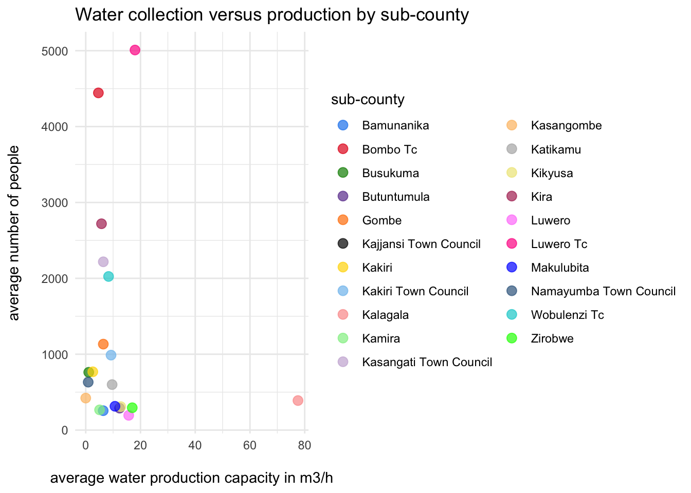

The goal of ugabore is to provide users with documentation on borehole repair data collected from two districts in central Uganda where a borehole operation and maintenance program is run. The dataset is associated with the following project report completed by Joseph Lwere for the “data science for openwashdata” course offered by openwashdata.org.
Installation
You can install the development version of ugabore from GitHub with:
# install.packages("devtools")
devtools::install_github("openwashdata/ugabore")Alternatively, you can download the individual datasets as a CSV or XLSX file from the table below.
| dataset | CSV | XLSX |
|---|---|---|
| ugabore | Download CSV | Download XLSX |
Project goal
Boreholes are the main technology used to access groundwater in Uganda, according to (Owor et al. 2022), and they are also a source of drinking water for households in rural communities in Africa, including Uganda (Lapworth et al. 2020). Therefore, it is crucial to have good quality data to inform decision-making and planning. This project examines data collected from two districts in central Uganda where a borehole operation and maintenance program is run. As professional operation and maintenance is considered the future for borehole functionality in Uganda (Smith, Ongom, and Davis 2023), this project report offers more insights into research on this topic.
Data
The dataset includes information about borehole repair records used by the borehole operation and maintenance company operating in central Uganda. The package provides access to one dataset.
The ugabore data set has 10 variables and 171 observations. For an overview of the variable names, see the following table.
| variable_name | variable_type | description |
|---|---|---|
| community | character | Local name used to refer to the administrative unit 5 where the borehole is located. |
| parish | character | Local name used to refer to the administrative unit 4 where the borehole is located. |
| sub_county | character | Local name used to refer to the administrative unit 3 where the borehole is located. |
| source_id | character | Unique identification number assigned to the borehole by the borehole maintenance company. |
| repair_date | double | Most recent repair date of the borehole. |
| population_served | double | Number of people that collect water from the borehole. |
| well_depth | double | Total depth of the borehole (measured in meters). |
| static_water_depth | double | Depth of the stable water level within the borehole when pumping isn’t happening (measured in meters). |
| pump_installation_depth | double | Depth of the pump when installed from land surface (measured in meters). |
| well_yield | double | Water production capacity of the borehole (measured in m3/h). |
Example: Water production capacity versus number of people collecting
Here is an example illustrating the relationship between the number of people collecting water from boreholes in a sub-county and the water production capacity of the corresponding boreholes. From the plot, we see that the sub-county of Kalagala has the highest water production capacity by far. However, it is not the sub-county that serves the most people, suggesting it may be the richest one. On another note, the sub-counties Bombo Town Council and Luwero Town Council have the most people collecting water from their boreholes but do not have high water production capacity, indicating a need for improvement.
library(ugabore)
library(ggplot2)
library(dplyr)
# Define custom colors for plotting
custom_colors <- c(
"Bamunanika" = "dodgerblue2", "Bombo Tc" = "#E31A1C",
"Busukuma" = "green4",
"Butuntumula" = "#6A3D9A",
"Gombe" = "#FF7F00",
"Kajjansi Town Council" = "black", "Kakiri" = "gold1",
"Kakiri Town Council" = "skyblue2", "Kalagala" = "#FB9A99",
"Kamira" = "palegreen2",
"Kasangati Town Council" = "#CAB2D6",
"Kasangombe" = "#FDBF6F",
"Katikamu" = "gray70", "Kikyusa" = "khaki2",
"Kira" = "maroon", "Luwero" = "orchid1", "Luwero Tc" = "deeppink1",
"Makulubita" = "blue1", "Namayumba Town Council" = "steelblue4",
"Wobulenzi Tc" = "darkturquoise", "Zirobwe" = "green1",
"NA" = "yellow4")
# Summarize data by sub_county
summary_data <- ugabore |>
group_by(sub_county) |>
summarise(mean_well_yield = mean(well_yield, na.rm = TRUE),
mean_population_served = mean(population_served, na.rm = TRUE))
# Plot summarized data
ggplot(summary_data, aes(x = mean_well_yield, y = mean_population_served,
color = sub_county)) +
geom_point(size = 3, alpha = 0.7) +
labs(title = "Water collection versus production by sub-county",
x = "\naverage water production capacity in m3/h",
y = "average number of people\n",
color = "sub-county") +
scale_color_manual(values = custom_colors) +
theme_minimal() 
License
Data are available as CC-BY.
Citation
Please cite this package using:
citation("ugabore")
#> To cite package 'ugabore' in publications use:
#>
#> Götschmann M, Lwere J (2024). _ugabore: Borehole repair data from
#> central Uganda_. R package version 0.0.0.9000,
#> <https://github.com/openwashdata/ugabore>.
#>
#> A BibTeX entry for LaTeX users is
#>
#> @Manual{,
#> title = {ugabore: Borehole repair data from central Uganda},
#> author = {Margaux Götschmann and Joseph Lwere},
#> year = {2024},
#> note = {R package version 0.0.0.9000},
#> url = {https://github.com/openwashdata/ugabore},
#> }